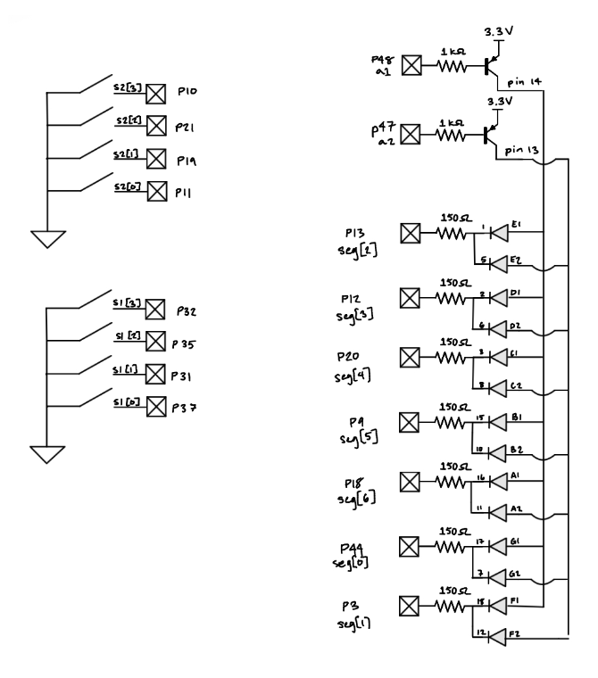
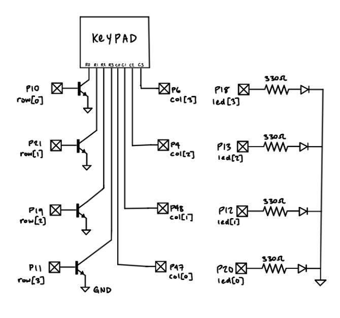
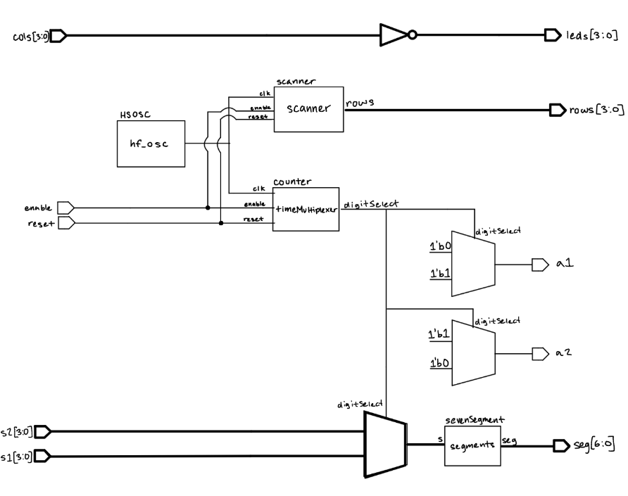
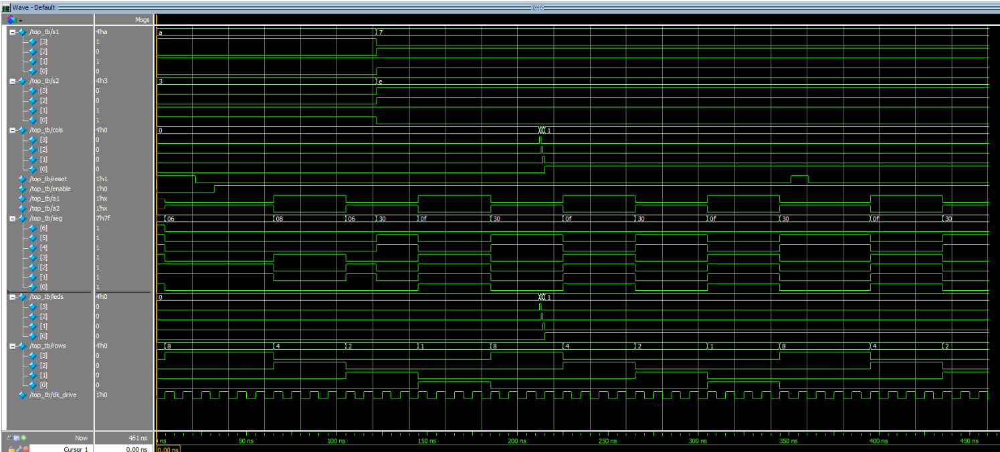
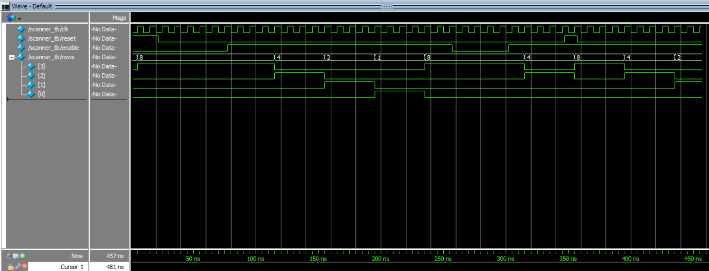

Lab 2 - Multiplexed 7-Segment Display
Introduction
This lab can be split into two main parts. First, I designed a system to time multiplex a dual seven-segment display to show a 2-digit hexadecimal number. The second part of the lab was to design a keypad scanner that blinks an LED based on the column of the currently pressed key.
Design and Testing Methodology
Frequency Calculations
For the first step of the design, the time multiplexing of the dual seven-segment display, I started with the seven segment decoder module I developed in the previous lab. I then had to find the correct frequency to multiplex the two displays. I looked online for what frequency the human eye can perceive as a constant light and found that it is around 60 Hz. I then decided to use a frequency of 120 Hz to multiplex the two displays to ensure there was no visible flicker. To achieve this frequency I used the on-board high-speed oscillator to generate a 48 MHz clock signal, then a counter was used with a max count of 200000 to generate a 120 Hz multiplexing frequency. My math to get the maximum count of 200000 is as follows: \(maxCount = \frac{48\text{ MHz}}{2 \times 120\text{ Hz}} = 200,000\)
Similar math was done to achieve the proper frequency for the keypad scanner. I wanted all 4 columns to be illuminated once within 0.5s. In other words, each LED should be on for 0.125 s in the scan pattern and the full scan pattern should complete twice within 1 second. In other words, you are scanning the full keypad twice per second (2 Hz). \(maxCount = {48\text{ MHz}} {\times 0.125\text{ s}} = 6,000,000\)
Hardware Design
The pinout schematic for the time-multiplexed dual seven-segment display is shown below. 2N3906 PNP transistors were used to drive the common anode of each display. The cathodes of the displays are connected to the FPGA pins through 150 ohm resistors.

The schematic for the keypad scanner is also shown below. The rows of the keypad are connected to the FPGA pins through 2N3904 NPN transistors, and the columns of the keypad are connected to the FPGA pins directly. Internal 100k ohm pull-up resistors are used on the column pins. The LEDs areconnected to the FPGA pin through 330 ohm resistors.

Technical Documentation
The source code for the project can be found in the associated Github repository
Block Diagram

Results and Discussion
Testbench Simulation


Above are the waveforms generated from each testbench simulation. Each module had its own test bench. Since the counter and sevenSegment modules came from the previous lab, they were not tested again. The top module test bench was used to test the entire design. The scanner test bench was used to test the keypad scanner module. The waveforms show that the design is functioning as expected.
Discussion
All prescribed tasks were completed successfully.
Conclusion
The design successfully displayed hexadecimal values on a dual seven-segment display by time multiplexing at a 120 Hz frequency. Additionally, the keypad scanner was able to scan the keypad at a frequency of 2 Hz and blink an LED based on the column of the currently pressed key.
I spent about twenty hours working on this lab.
AI Prototype Summary
When given the first prompt, Copilot generated the following:
module seven_seg_decoder (
input logic [3:0] bin,
output logic [6:0] seg // {a,b,c,d,e,f,g}, active-low
);
always_comb begin
case (bin)
4'h0: seg = 7'b0000001;
4'h1: seg = 7'b1001111;
4'h2: seg = 7'b0010010;
4'h3: seg = 7'b0000110;
4'h4: seg = 7'b1001100;
4'h5: seg = 7'b0100100;
4'h6: seg = 7'b0100000;
4'h7: seg = 7'b0001111;
4'h8: seg = 7'b0000000;
4'h9: seg = 7'b0000100;
4'hA: seg = 7'b0001000;
4'hB: seg = 7'b1100000;
4'hC: seg = 7'b0110001;
4'hD: seg = 7'b1000010;
4'hE: seg = 7'b0110000;
4'hF: seg = 7'b0111000;
default: seg = 7'b1111111; // all off
endcase
end
endmodule
module seven_seg_mux2 (
input logic clk,
input logic rst_n,
input logic [3:0] digit0, // first nibble
input logic [3:0] digit1, // second nibble
output logic [6:0] seg, // shared segment lines (active-low)
output logic [1:0] an // anode enables (active-low)
);
// ------------------------------------------------------------
// Clock divider for multiplexing (adjust DIV for refresh rate)
// ------------------------------------------------------------
localparam int DIV = 50000; // ~1 kHz at 50 MHz clock
logic [$clog2(DIV)-1:0] cnt;
logic mux_sel;
always_ff @(posedge clk or negedge rst_n) begin
if (!rst_n) begin
cnt <= '0;
mux_sel <= 1'b0;
end else begin
if (cnt == DIV-1) begin
cnt <= '0;
mux_sel <= ~mux_sel; // toggle between digit0 and digit1
end else begin
cnt <= cnt + 1;
end
end
end
// ------------------------------------------------------------
// Select which digit to decode
// ------------------------------------------------------------
logic [3:0] active_digit;
always_comb begin
case (mux_sel)
1'b0: begin
active_digit = digit0;
an = 2'b10; // enable digit0 (active-low)
end
1'b1: begin
active_digit = digit1;
an = 2'b01; // enable digit1 (active-low)
end
endcase
end
// ------------------------------------------------------------
// Shared decoder instance
// ------------------------------------------------------------
seven_seg_decoder dec_inst (
.bin(active_digit),
.seg(seg)
);
endmoduleIt compiled successfully. Scanning through the code I believe it would work, it just probably wouldn’t meet lab specifications. I then used ChatGPT to upload my lab 1 code and the second given prompt. The code it produced:
// Isabella Vera
// E155 Lab 1
// Time-multiplexed seven-segment display
module top (
input logic [3:0] s0,
input logic [3:0] s1,
input logic reset,
output logic [6:0] seg0,
output logic [6:0] seg1
);
// Internal high-speed oscillator
logic int_osc;
HSOSC hf_osc (
.CLKHFPU(1'b1),
.CLKHFEN(1'b1),
.CLKHF(int_osc)
);
// Counter used to slow down the multiplexing
logic [15:0] count;
always_ff @(posedge int_osc or posedge reset) begin
if (reset)
count <= 16'b0;
else
count <= count + 1'b1;
end
// Select between the two input digits
logic [3:0] selected_input;
assign selected_input = count[15] ? s1 : s0;
// Output of the single seven-segment decoder
logic [6:0] decoded_seg;
// Use one decoder for both displays
sevenSegDecoder decoder (
.s(selected_input),
.seg(decoded_seg)
);
// Time multiplex the decoder output
// Outputs are active-low because the display is common-anode.
always_comb begin
if (count[15]) begin
seg0 = 7'b1111111; // display 0 off
seg1 = decoded_seg; // display 1 on
end
else begin
seg0 = decoded_seg; // display 0 on
seg1 = 7'b1111111; // display 1 off
end
end
endmoduleI found it interesting that the code generated by ChatGPT was very similar to my own code from lab 1. I was surprised that it even generated my name and information in the top comment. This code also compileds successfully. I believe both designs would work, but the ChatGPT design is more efficient in terms of using modules I already developed, something I implemented in lab this week.